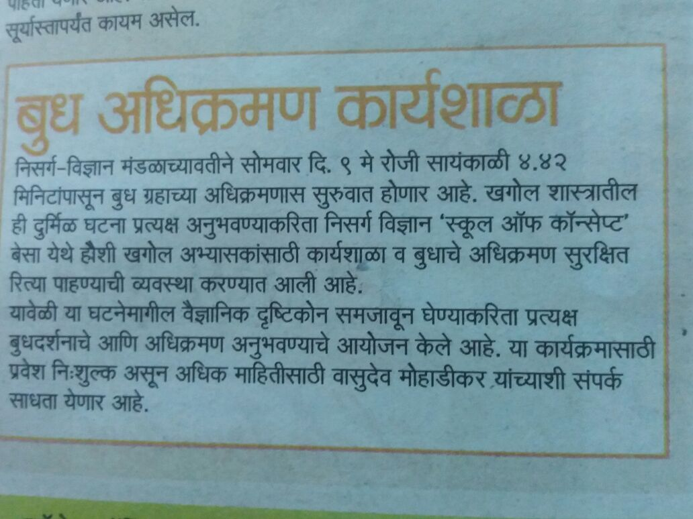
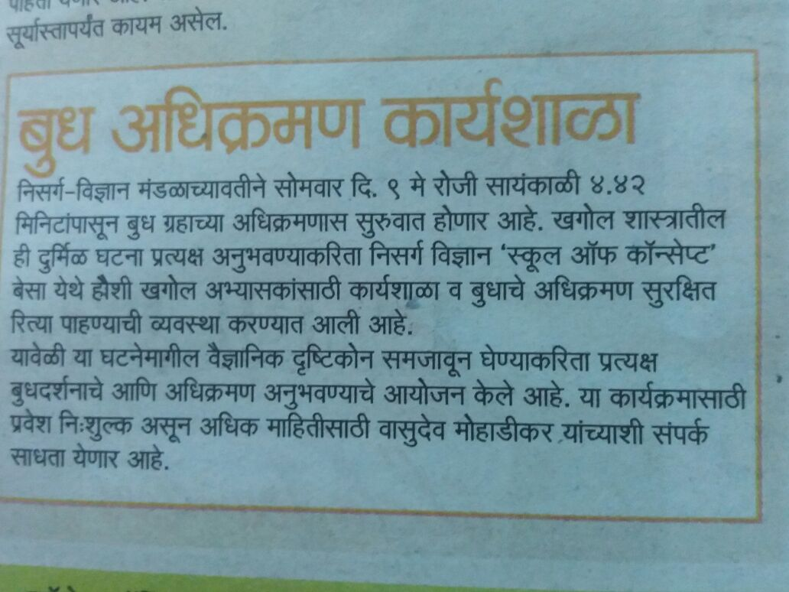
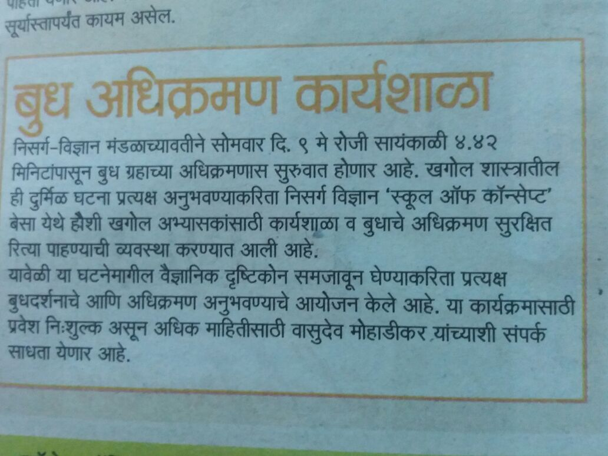

Nisarga Vidnyan Mandal, Nagpur
NiViM (Nisarg Vidnyan Mandal) is a community-based voluntary organisation working on Environmental Education, Public Health & Hygiene, Science Popularization, Women Empowerment, Animal welfare and Sustainable Agriculture practices of Organic and Natural Farming. These are done through campaigns and the volunteers and activists dedicated to the cause of Nature Conservation with the popularization of science. The organisation consists of a team of young energetic teachers, researchers, nature lovers, field activists. Starting with these roots in local action, NiViM has worked on a number of local, divisional and state-wide national issues.!!!
